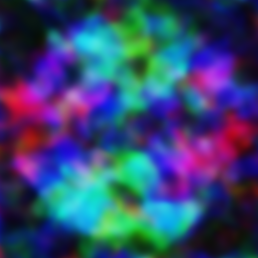
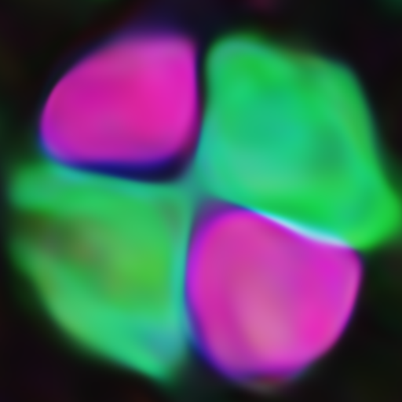
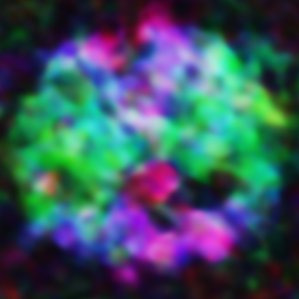
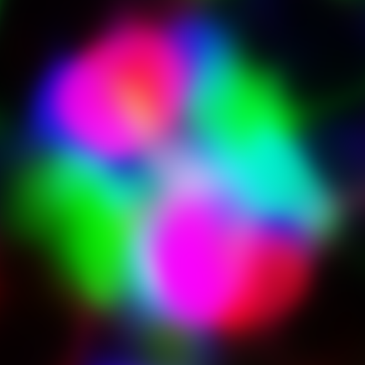
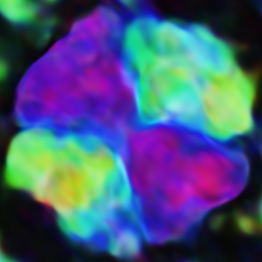
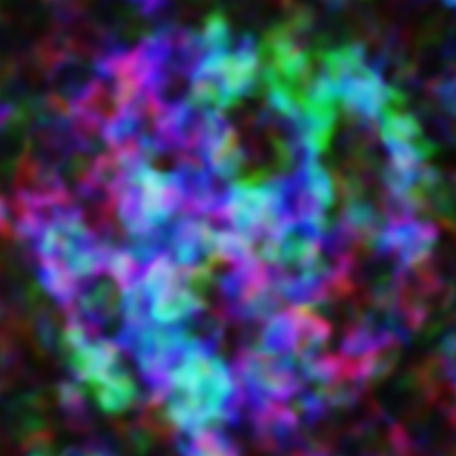

I build learning systems that connect perception, prediction, and action on physical robots. My work spans world models, robot foundation models, multimodal learning, and 3D perception, with a focus on reusable manipulation skills, online policy refinement, and reliable real-world deployment.
I am currently a Member of Technical Staff at a stealth company, working on world action models and industrial robot manipulation. I completed my master's at the University of Michigan in May 2026, where I worked with Prof. Katie Skinner in the Field Robotics Group (FRoG) on underwater perception and SLAM.
Outside robotics, I make generative art rooted in Tamil landscapes and the streets of Madurai, where I am from. Aintinai is one expression of that interest; I also write on Latent Gaussian on Substack.
Critic-guided Schrödinger bridge refinement adapts frozen vision-language-action (VLA) policies using sparse rewards. A lightweight two-step actor removes candidate search and critic evaluation from inference. Evaluated on LIBERO, LIBERO-PRO, and bimanual robot hardware, with 92.3% mean LIBERO success compared with a 53.1% base policy, and stacking time reduced from 26.1 to 13.3 seconds.
SurfSLAM is a real-time underwater SLAM framework that combines learned stereo depth with acoustic-inertial odometry for localization and dense 3D reconstruction. Its sim-to-real training pipeline uses physics-based underwater image augmentation and self-supervised fine-tuning to adapt stereo networks to challenging underwater conditions. Evaluated on real-world shipwreck surveys, the framework improves stereo depth estimation, trajectory estimation, and reconstruction of complex underwater scenes.
In classical Tamil Sangam poetry, landscape is a language for human experience. The five thinai connect a place's terrain, flowers, animals, season, and hour with the emotional life of its people: kurinji, the mountains and lovers' union; mullai, the forest and patient waiting; marutham, the farmland and the tensions of domestic life; neithal, the coast and longing; and paalai, the parched land of separation and difficult journeys. They are ways of seeing nature and human life as intertwined.
Aintinai brings that tradition into a moving, generative painting, drawing on the flat colour, dark outlines, and ornamental borders of Nayak temple murals. The landscape drifts from hills and pasture to fields, backwaters, and dry country, then into Madurai, where I am from, with its street leading toward the Meenakshi temple. Trees, shrines, animals, people at work, and small street scenes give the world its everyday life alongside its monuments.
This is generative art made without AI. Every visual element is described in hand-authored drawing code: JavaScript draws SVG shapes and paths, while CSS supplies styling and animation. Rules guide how the terrain blends, where subjects belong, and how their forms vary; seeded randomness gives those rules a different expression in every world. What you see is assembled in your browser as you explore, rather than produced by an image-generation model. Open the full painting and point at a subject to discover its Tamil and English names. Built on the chunk engine of {Shan, Shui}* by Lingdong Huang.
My research has often produced weird art as a wrong byproduct. While this was annoying during the research process, it now looks cool enough to show on my website!





